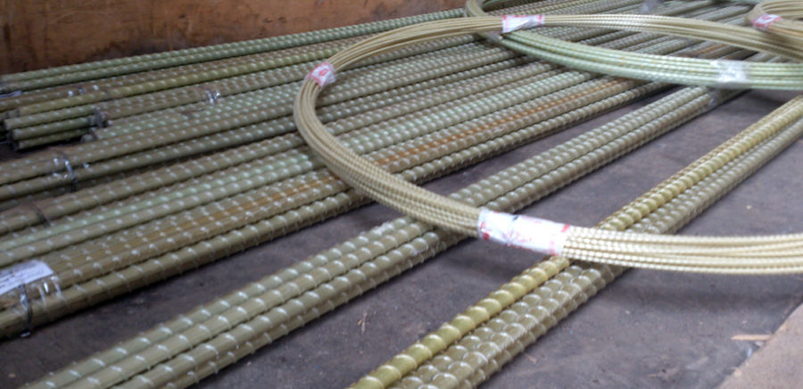

Недостатки стеклопластиковой арматуры
В строительной отрасли в наши дни все чаще применяют новые, инновационные материалы, один из таких – это арматура стеклопластиковая. Благодаря умеренной стоимости и техническим параметрам этим изделием сейчас заменяют привычные металлические элементы.
Что такое стеклопластиковая арматура?
По сути своей арматура стеклопластиковая – это современный материал для строительства (преимущественно малоэтажного), максимально востребованный, являющийся достойной альтернативой арматуре из стали. Основа этого изделия –современные полимеры и стекловолокно. Внутри у нее – прочнейшие волокна, связанные намертво полимерными смолами, снаружи – массив этого же волокна, но идущего по спирали, вдоль всей арматуры.
Производство этих изделий уже налажено, и за рубежом, и в нашей стране. Этот материал имеет много плюсов: он существенно дешевле стали, для работы с ним не требуется специфическое оборудование, монтировать его просто, не нужно нанимать для работы мастеров. Применение стеклопластиковой арматуры оправдано во множестве ситуаций, однако отдельные строительные специалисты продолжают утверждать, что этот материал далеко не всегда способен заменить традиционную арматуру из стали. Разобраться в этом вопросе поможет анализ недостатков стеклопластиковой арматуры.
Анализ недостатков арматуры из стекловолокна и полимеров
К достоинствам этого материала можно отнести: небольшой вес, удобную упаковку в бухтах, долговечность, минимальную теплопроводность, устойчивость к кислотам и другой химии, радиопрозрачность.
Недостатки арматуры стеклопластикового типа следующие:
- термически этот материал недостаточно устойчивый, он точно не выдержит нагревания до 200 градусов, однако этот минус вряд ли существенен, ведь в малоэтажном строении арматуру практически невозможно нагреть до такой температуры;
- ее модуль упругости (на излом) ниже, чем этот показатель у арматуры стальной, и это – основной минус этого материала, ограничивающий сферу его использования в строительной отрасли;
- арматура стеклопластиковая не гнется, поэтому там, где нужны изгибы, однозначно применяют обычную, стальную арматуру;
- при монтаже эти прутья невозможно соединить, используя электросварку, однако их можно надежно соединить иными способами (проволокой, либо с помощью наконечников);
- при создании жесткого каркаса из арматуры стеклопластиковой возможны нюансы – каркас получится не таким жестким, он также хуже переносит нагрузки и вибрации, в редких случаях арматура может прижаться к стенами траншеи, либо просто «соскочить».
Нельзя сказать однозначно, что этот вид изделий хуже или лучше изделий из стали, все зависит от сферы применения.
Качественную, добротную арматуру стеклопластиковую можно смело использовать не только в малоэтажном, но и в промышленном строительстве: в отдельных видах фундаментов (ленточном, плитном), в армировании деревянных клееных балок и стен из кирпичей и блоков, в несущих частях бассейнов, в качестве связей в многослойных панелях. Однако область применения арматуры этого типа существенно ограничена, и зависит от конкретного проекта.